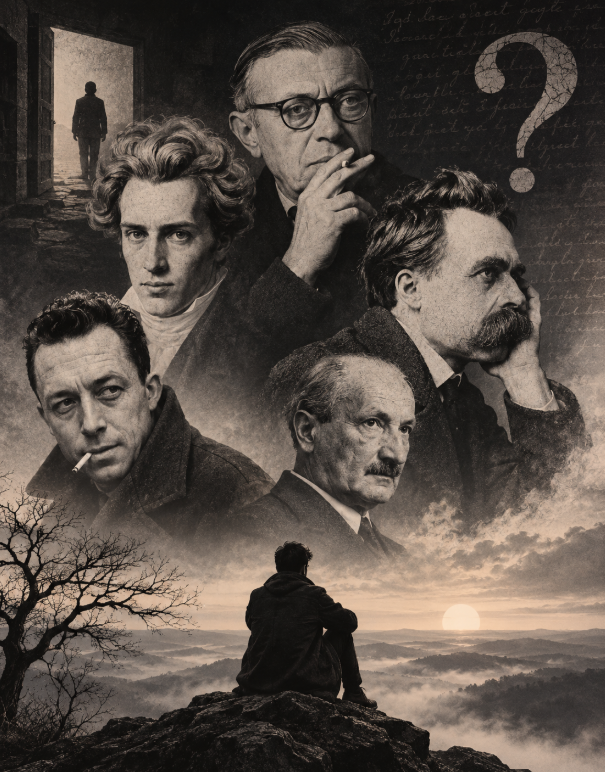

SVG RESOURCE
Existentialism Concept Map
A visual overview of key existentialist concepts and how freedom, anxiety, bad faith, the absurd, and authenticity relate.
Open Full SizeExistentialism is a philosophical tradition that starts from the lived reality of individual human existence rather than from abstract systems. Its thinkers ask what it means to be free, to choose, to face death, and to live without guarantees of meaning. Growing out of nineteenth-century Europe and coming to prominence in the twentieth, it became one of the most widely discussed movements in modern philosophy, literature, and culture.[1]

Existentialism is a philosophical tradition concerned with human existence, individual freedom, responsibility, and the search for meaning. It explores how people understand their lives, make choices, and define themselves while facing uncertainty, personal limitations, and the reality of mortality. At its heart lies a fundamental question: what does it mean to live a meaningful life when no one can tell us in advance what that life should look like? Rather than beginning with abstract definitions of human nature, existentialist thinkers examine existence as it is actually lived: through choices, relationships, suffering, anxiety, and the awareness that life is finite. They are interested not simply in what human beings are, but in how individuals understand and shape their lives. [1]
A recurring concern in existentialism is that human beings cannot always rely on a predetermined purpose or universal system of values to decide how they should live. For atheistic existentialists such as Jean-Paul Sartre, there is no divine plan or fixed human essence that determines what a person must become. Individuals therefore have to confront their freedom and take responsibility for the choices through which they shape their lives. This freedom is not necessarily comforting. It can bring anxiety, uncertainty, and the temptation to hide behind social expectations or excuses rather than acknowledge one's responsibility. [1]
Existentialism, however, does not offer one unified answer to these questions. Søren Kierkegaard approached existence through Christian faith, while Friedrich Nietzsche examined the crisis of inherited values and the problem of nihilism. Martin Heidegger investigated the nature of human existence through his analysis of Dasein, and Sartre developed an explicitly atheistic philosophy centred on freedom and responsibility. Simone de Beauvoir explored how freedom is connected to ethics, embodiment, and the freedom of others, while Albert Camus examined the tension between humanity's search for meaning and an apparently indifferent world. Their approaches differ, but they share an interest in the difficulties and possibilities of human existence. [1] [2]
Although its intellectual roots reach back to the nineteenth century, existentialism became particularly influential during the twentieth century, especially in post-war France. Its development drew on earlier philosophical traditions, phenomenology, literature, and debates about religion, freedom, and modern life. The term itself became associated with a wider intellectual movement during the 1940s and 1950s, even though several thinkers later grouped under the label never identified themselves as existentialists. A [2]
Existentialism is better understood as a family of related philosophical approaches than as a single closed system. Its starting point is often the individual already situated in the world: someone with a particular history, body, relationships, and circumstances, who must still decide how to live. Kierkegaard's concern with the single individual, Heidegger's analysis of Dasein, and Sartre's account of freedom in situation all approach this problem in different ways. [1]
Existentialism also has an important relationship with phenomenology, but the two are not interchangeable. Phenomenology investigates the structures of experience, while existentialist thinkers use related approaches to explore questions of freedom, embodiment, anxiety, and human existence. Similarly, existentialism should not be confused with nihilism or absurdism. Although existentialist philosophers take the loss of inherited meaning seriously, they do not all respond to it in the same way. Camus, for example, developed his philosophy of the absurd around the conflict between humanity's desire for meaning and the world's silence, while resisting a straightforward identification with existentialism. [1]
Compared with Stoicism, existentialism also begins from a different understanding of the individual's relationship with the world. Stoicism places human life within a rationally ordered cosmos and asks how we can live in accordance with nature, whereas existentialist thinkers examine how individuals can live responsibly when the meaning and direction of existence cannot simply be taken for granted. [13]
What connects these different approaches is not a single answer, but a shared philosophical concern: how should we live when our existence is finite, uncertain, and shaped by circumstances we did not entirely choose? Existentialism does not settle this question once and for all. Instead, it asks individuals to confront it through the lives they actually lead.
Also read: Explore more history History of philosophy traces how thinkers and philosophical traditions have explored questions about reality, knowledge, morality, and human existence across different periods and cultures. Read article →
The history of existentialism begins before the word itself existed. Questions about what it means to exist, how a person should live, whether life has an inherent meaning, and how individuals should respond to suffering, death, and uncertainty can be found in earlier philosophy and religious writing. But these questions became especially urgent in nineteenth-century Europe, as traditional religious frameworks were increasingly challenged by modern science, secular thought, and new political and social conditions. Søren Kierkegaard and Friedrich Nietzsche are particularly important at this stage. Kierkegaard focused on the existing individual, personal commitment, anxiety, and the difficulty of living a genuine religious life, while Nietzsche confronted the collapse of inherited values and the growing problem of nihilism. Neither philosopher called himself an existentialist, but both became central to the later history of the tradition because they shifted attention toward the individual's concrete existence and the problem of how life is to be lived when inherited answers can no longer simply be assumed.[1][2]
During the early twentieth century, these concerns developed through phenomenology and the work of thinkers such as Edmund Husserl, Martin Heidegger, and Karl Jaspers. Phenomenology provided a way of examining experience from the standpoint of how it is actually lived, while Heidegger turned this approach toward the question of human existence, including anxiety, death, freedom, authenticity, and our being situated in a world shared with others. After the Second World War, existentialist ideas became a major intellectual and cultural force in France, particularly through Jean-Paul Sartre and Simone de Beauvoir, alongside figures such as Albert Camus and Gabriel Marcel. Their philosophy appeared not only in academic works but also in novels, plays, essays, and political writing, bringing questions of freedom, responsibility, meaning, alienation, and the absurd into public discussion. It was during this period that "existentialism" became widely recognized as the name of a movement, even though the thinkers associated with it held very different positions and some explicitly rejected the label. For that reason, the history of existentialism is not a simple progression from one doctrine to another, but the gradual convergence of several different attempts to understand what it means to exist as a human being.[1][2]
Existentialism did not appear from nowhere in the nineteenth or twentieth century. Earlier philosophers and religious writers had already explored questions that would later become central to existential thought: what it means to live as an individual, how a person confronts death and suffering, whether life has a discoverable purpose, and what happens when inherited answers fail to settle the problems of existence. Augustine's Confessions, for example, gives unusual attention to inwardness, memory, desire, sin, and the restless search for God within an individual life. Blaise Pascal's Pensées similarly examines the instability of the human condition, placing human beings between their awareness of their own greatness and their vulnerability, mortality, and dependence. These writers were not existentialists, but their attention to inward experience and the individual's confrontation with meaning helped create an intellectual background in which later existential questions could become more prominent. The nineteenth-century fiction of Fyodor Dostoevsky became especially important to later existentialists. In Notes from Underground (1864), the unnamed narrator resists the idea that human behaviour can be completely explained through rational calculation and predictable laws. His destructive insistence on choosing even against his own interests dramatizes a problem that existentialist philosophy would repeatedly return to: whether human beings can be reduced to predictable objects within a rational system. For this reason, Augustine, Pascal, Dostoevsky, and several other earlier writers are better understood as intellectual and literary precursors than as members of existentialism itself.[11][1]
The nineteenth century brought the questions of individual existence into a much sharper confrontation with modernity. Søren Kierkegaard and Friedrich Nietzsche are the two figures most often placed at the beginning of this development, although neither described himself as an existentialist. Kierkegaard's writings challenged the idea that an abstract philosophical system could resolve the concrete problem of how an individual ought to exist. Writing against what he regarded as the excessive abstraction of Hegelian philosophy and the complacency of established Christianity, Kierkegaard made the "single individual" and the inward task of choosing and committing central to his thought. His concerns included anxiety, despair, freedom, faith, responsibility, and the difficulty of becoming oneself. Nietzsche approached the crisis from a very different direction. His critique of Christianity, his diagnosis of the "death of God," and his analysis of nihilism addressed a Europe in which inherited religious and moral certainties were losing their authority. Rather than simply replacing one unquestioned system with another, Nietzsche asked what human beings might do after the collapse of those inherited values.[6][7]
Kierkegaard and Nietzsche therefore reached very different conclusions, but both helped redirect philosophy toward the problem of the existing person. Kierkegaard examined existence through the individual's passionate relation to faith, while Nietzsche investigated self-overcoming, value creation, nihilism, and the consequences of a world in which traditional sources of authority could no longer be taken for granted. Their importance to existentialism lies less in providing a finished doctrine than in changing the questions philosophy was expected to ask. Both resisted the idea that human existence could be adequately understood from a detached, universal standpoint that leaves the particular individual out of the picture. Their influence became especially important in the twentieth century, when philosophers such as Heidegger, Jaspers, Sartre, and others returned to these problems in new forms.[1][6]
In the early twentieth century, existential questions gained a new philosophical framework through phenomenology. Edmund Husserl developed phenomenology as a method concerned with describing and analysing experience as it is given, rather than beginning with assumptions about the external world or reducing experience immediately to causal explanations. Martin Heidegger took this approach in a different direction. In Being and Time (1927), he made the question of being and the particular form of existence that belongs to human beings central to his investigation. His analysis of Dasein, being-in-the-world, thrownness, anxiety, authenticity, and being-toward-death provided much of the conceptual vocabulary that later existentialist thinkers would develop. Heidegger's concern was not simply with describing psychological feelings; he was asking what kind of being a human being is and how its existence is structured by its involvement with a world, with other people, and with its own possibilities.[9][1]
Karl Jaspers developed another important strand of this movement through what he called a "philosophy of existence." His work focused on situations such as death, suffering, guilt, and conflict that cannot simply be removed through technical knowledge or ordinary problem-solving. Such "limit situations" force individuals to confront the boundaries of what they can control and understand. Heidegger's philosophy likewise became a major source for later existentialism, especially for Sartre, even though Heidegger himself rejected the retrospective identification of his philosophy with existentialism. This distinction matters: phenomenology was not simply renamed existentialism, and Heidegger did not set out to establish the movement that later carried that name. Rather, phenomenology and the philosophies of Heidegger and Jaspers supplied important tools and concepts through which twentieth-century thinkers could investigate existence more directly.[1][9]
Existentialism became a major public and cultural phenomenon in France during and after the Second World War. The experience of occupation, collaboration, resistance, violence, and political uncertainty gave questions about freedom and responsibility an immediate historical force. Jean-Paul Sartre became the most visible philosophical representative of the movement. His novel Nausea (1938) explored alienation and the contingency of existence, while Being and Nothingness (1943) developed his account of consciousness, freedom, bad faith, and the individual's relation to the world and other people. His 1945 lecture Existentialism Is a Humanism then presented existentialism to a broad audience in a comparatively accessible form. Simone de Beauvoir was equally important to the intellectual development of the movement, although her philosophy developed in directions that cannot simply be reduced to Sartre's. Her work connected existential freedom with ethics, embodiment, oppression, and the social conditions under which freedom is actually exercised.[4][1]
Albert Camus, Maurice Merleau-Ponty, Gabriel Marcel, and other French intellectuals contributed to the wider cultural conversation, although they did not all shared the same philosophical position or accept the existentialist label. Camus developed his own philosophy of the absurd, revolt, and solidarity and resisted being classified straightforwardly as an existentialist. Merleau-Ponty brought phenomenology into questions of embodiment and perception, while Marcel represented a religious form of existential thought. Sartre, Beauvoir, and their circle also used novels, plays, journalism, political essays, and public lectures alongside philosophical argument. Les Temps modernes, founded in 1945, became an important forum for these debates. As a result, existentialism was never merely a university philosophy: it became a wider intellectual culture in which philosophical questions about freedom, responsibility, meaning, alienation, and human relationships were discussed through both philosophy and literature.[4][14]
The influence of existentialism did not remain confined to postwar France. Through translations, universities, literature, theatre, film, and intellectual exchange, existentialist ideas spread across Europe, the Americas, and other parts of the world. Its questions were taken up in psychology and psychotherapy, where thinkers explored anxiety, freedom, responsibility, meaning, and the individual's relation to the world; in theology, where religious thinkers reconsidered faith and existence under modern conditions; and in literature and theatre, where themes of alienation, absurdity, freedom, and meaning became increasingly prominent. Existentialist thought also intersected with political and anticolonial debates, particularly through Sartre and Beauvoir, while later thinkers revisited existential questions through feminism, race, embodiment, technology, and social structures. The movement became less culturally dominant in Europe from the 1960s onward as structuralism and other approaches gained prominence, but the decline of the label did not mean the disappearance of its underlying questions. Freedom, responsibility, authenticity, death, alienation, and the problem of meaning continued to influence philosophy and the humanities long after "existentialism" ceased to function as the dominant intellectual fashion.[12][1]
The term "existentialism" is useful, but it can also create a misleading impression of philosophical unity. The thinkers associated with the tradition disagreed about some of its most important questions: whether existence is fundamentally religious or secular, whether freedom is radical or situated within deeper structures, whether human relationships are primarily marked by conflict or capable of genuine solidarity, and whether philosophy should begin with questions of being, ethics, faith, or lived experience. Kierkegaard and Nietzsche were nineteenth-century predecessors whose work was incorporated into the later tradition, rather than members of a movement they knew by that name. Heidegger rejected the existentialist interpretation of his philosophy, while Camus also resisted the label. Sartre, by contrast, explicitly adopted "existentialist" as a description of his own position. The word is therefore best treated as a historical shorthand for a diverse group of thinkers connected by overlapping concerns, rather than as the name of a single philosophical doctrine. Different histories of existentialism consequently draw the boundaries of the movement differently, and those differences are part of the history itself.[1][3]
Also read: Explore more thinkers Philosophical thinkers are the individuals whose ideas have shaped the study of reality, knowledge, ethics, politics, and human existence across different cultures and periods. Read article →
Existentialism has no official list of members, and the philosophers associated with it did not all agree about what human existence means. Kierkegaard and Nietzsche are generally treated as nineteenth-century precursors, while Heidegger and Jaspers developed important twentieth- century philosophies of existence that later influenced existentialists. In postwar France, Jean-Paul Sartre and Simone de Beauvoir became central to the movement, while Albert Camus developed a closely related philosophy of the absurd but rejected the existentialist label. Gabriel Marcel represents an important Christian strand of existential thought. Taken together, these thinkers show why existentialism is better understood as a family of related approaches than as a single doctrine: they repeatedly return to questions of freedom, responsibility, anxiety, meaning, death, authenticity, faith, and the individual's relationship with other people, but often answer those questions in sharply different ways.[1][3]
Søren Kierkegaard (1813–1855) is often called a father or precursor of existentialism because he made the existing individual, rather than an abstract philosophical system, central to the problem of how one should live. Writing in nineteenth-century Denmark, he challenged the idea that speculative philosophy could settle the deepest questions of personal existence. His concern was not simply whether a proposition about Christianity was logically defensible, but what it meant for a particular person to exist, choose, commit, and take responsibility for becoming a self. In works such as Either/Or, Fear and Trembling, The Concept of Anxiety, and The Sickness Unto Death, he examined different forms of life, including the aesthetic, ethical, and religious ways of relating to oneself and the world. His analyses of anxiety and despair became especially important for later existentialists because they treat these experiences not merely as passing emotions but as disclosures of problems built into human existence.[6]F
Kierkegaard's contribution to existentialism also lies in his account of choice and inward commitment. For him, becoming a self is not simply a matter of inventing oneself without limits. Human beings receive circumstances and limitations that they did not choose, yet they must still take responsibility for how they relate to those conditions. Kierkegaard therefore combines self-formation with self-acceptance, rather than treating freedom as unlimited self-creation. His religious thought ultimately places this task within a relationship with God, making his existentialism very different from the later atheism of Sartre. He did not call himself an existentialist, but his emphasis on individual existence, anxiety, despair, choice, responsibility, and the task of becoming a self became foundational for the tradition that developed after his death.[6][1]
Friedrich Nietzsche (1844–1900) became a major precursor of existentialism through his diagnosis of the collapse of inherited religious and moral certainties. His declaration that "God is dead" was not simply a statement about whether God exists; it described a cultural crisis in which Christianity and the values associated with it were losing their authority while no replacement had yet secured the same force. Nietzsche saw the resulting danger as nihilism: the possibility that, once traditional values lose their grounding, life itself may come to appear without value or purpose. In The Gay Science, Thus Spoke Zarathustra, Beyond Good and Evil, and On the Genealogy of Morality, he investigated how values arise, how they shape human beings, and how inherited moral frameworks can suppress rather than strengthen life.[7]G
Nietzsche's positive contribution was not simply to tell individuals to "create their own values." His philosophy asks what kind of person could actually overcome inherited habits of thought and give form to a life capable of affirmation. Ideas such as self-overcoming, the Übermensch, eternal recurrence, and the affirmation of life are connected to this larger project. The ideal is not arbitrary choice, but the difficult transformation of oneself and one's values in response to the realities of existence. Nietzsche was not an existentialist and did not belong to an existentialist school, but later existentialists found in his critique of nihilism, religion, morality, conformity, and selfhood a powerful account of the crisis that modern individuals had to confront.[7][1]
Martin Heidegger (1889–1976) occupies a difficult but essential place in the history of existentialism. His Being and Time (1927) was not written as an existentialist manifesto, and Heidegger later rejected the attempt to classify his philosophy under that label. Nevertheless, his analysis of human existence supplied many of the concepts that became central to later existential thought. He called the distinctive kind of being that asks about Being Dasein, and analysed it as fundamentally being-in-the-world rather than as a detached mind observing an external reality. Human beings are already situated in a world of relationships, practices, possibilities, and meanings that they did not create for themselves.[9][1]
Heidegger's analysis introduced or transformed concepts that later became part of the existential vocabulary, including thrownness, anxiety, authenticity, being-toward-death, and the anonymous social world of das Man, often translated as "the They." His account of authenticity does not mean becoming an isolated individual who simply follows personal preferences; it concerns taking responsibility for one's own possibilities instead of allowing the expectations of the anonymous social world to determine one's existence completely. His work therefore gave existentialism a deeper ontological foundation, connecting questions about how one should live with a more fundamental question about what it means for a human being to exist at all. Sartre, Beauvoir, and other later thinkers developed some of these ideas in very different directions.[1][9]
Karl Jaspers (1883–1969) developed his own philosophy of existence and became an important figure in the intellectual background of existentialism. His central contribution was the idea of "limit situations"—experiences such as death, suffering, guilt, and struggle in which the ordinary frameworks used to manage life reach their limits. These situations cannot simply be solved or removed by technical knowledge. Instead, they confront individuals with the boundaries of their existence and force questions that ordinary everyday life can allow them to avoid. For Jaspers, philosophical thinking therefore begins not only with abstract problems but with moments in which existence itself becomes impossible to ignore. He also developed the idea of philosophical faith, distinguishing it from dogmatic certainty and connecting philosophical transcendence with the individual's attempt to orient themselves in the face of existential limits.[1][5]
Gabriel Marcel (1889–1973) developed a religious philosophy of existence centred on concrete experience, personal presence, fidelity, hope, and participation with others. His distinction between being and having examined the danger of treating human existence as though persons were merely objects that can be possessed, measured, or controlled. In works including Being and Having and The Mystery of Being, Marcel argued that some aspects of human existence are better understood through lived participation and personal relationship than through detached problem-solving. After converting to Catholicism in 1929, his philosophy developed an explicitly Christian orientation, making him an important representative of theistic existentialism. Marcel initially accepted the description "Christian existentialism" but later rejected the label, another example of why the boundaries of existentialism are historically complicated.[1][15]
Jean-Paul Sartre (1905–1980) gave existentialism its most systematic atheistic formulation and became the thinker most strongly associated with the movement in the public imagination. In Being and Nothingness (1943), he developed an account of consciousness as fundamentally different from an inert object: consciousness can negate what is given, imagine possibilities, and project itself toward what it is not yet. This underlies his claim that, for human beings, "existence precedes essence." People are not born with a fixed essence that completely determines who they will become; they continually define themselves through projects and choices. Sartre nevertheless did not mean that people can do absolutely anything they want. Freedom is always exercised within a factical situation involving a particular body, past, social world, and material circumstances.[5][4]
Sartre connected this freedom to anguish, responsibility, bad faith, and the problem of other people. Bad faith occurs when consciousness attempts to evade its freedom by treating itself as though it were a fixed thing completely determined by a role, circumstance, or social expectation. Sartre's later political writings also pushed existentialism beyond purely personal questions toward oppression, colonialism, political action, and responsibility for the social world. His lecture Existentialism Is a Humanism (1945), novels, plays, journalism, and philosophical works helped turn existentialism into a major postwar intellectual movement. His importance to the school therefore lies not only in the slogan "existence precedes essence," but in his attempt to construct a systematic philosophy connecting consciousness, freedom, responsibility, self-deception, and relations with others.[4][5]
Simone de Beauvoir (1908–1986) was not simply an interpreter of Sartre; she made original contributions to existentialist ethics, phenomenology, feminist philosophy, and political thought. In The Ethics of Ambiguity (1947), she developed the idea that human beings are both free and situated: we are capable of projecting ourselves toward possibilities, yet we always act within material, historical, bodily, and social conditions that we did not freely choose. This ambiguity is not a problem that can be eliminated. It is part of the human condition. Beauvoir consequently rejected the idea that one's freedom can be pursued independently of other people. To affirm one's own freedom ethically requires recognizing and supporting the freedom of others, making existential freedom a matter of responsibility and reciprocity rather than isolated self-assertion.[10][2]
Beauvoir extended these questions into an analysis of concrete social oppression. In The Second Sex (1949), she examined how women are historically and socially positioned as "Other" in relation to men, showing how a person's possibilities are shaped by institutions, expectations, embodiment, and unequal social conditions. This gave existentialism a more developed account of situated freedom: a person may be free in an existential sense while facing circumstances that severely restrict the possibilities available to them. Her work consequently helped move existentialism beyond the abstract question of individual choice toward questions of gender, power, oppression, embodiment, and the social conditions required for freedom. Beauvoir is therefore essential to any account of existentialism that takes its ethical and political implications seriously.[2]
Albert Camus (1913–1960) is closely associated with the existentialist generation, but he repeatedly rejected the label "existentialist." His own philosophical vocabulary centred on the absurd, which arises from the conflict between the human desire for meaning, order, and clarity and a world that does not provide a final answer to that desire. In The Myth of Sisyphus (1942), Camus explored the consequences of recognizing this conflict without escaping it through suicide or what he regarded as philosophical or religious "leaps" beyond the absurd. His answer was revolt: to remain lucid about the absence of ultimate justification while continuing to live, act, and experience the world intensely. The figure of Sisyphus became his enduring image of a person confronting an apparently futile condition without surrendering to it.[8][1]
Camus later extended this concern from individual existence to political and moral life. In The Rebel (1951), revolt becomes connected with solidarity: recognizing that one's own suffering and vulnerability are shared human conditions can create grounds for resisting oppression without turning liberation into another justification for unlimited violence. His novels, including The Stranger and The Plague, explored these questions through fictional situations rather than systematic philosophical argument. Camus therefore belongs to the history of existentialism in an important but qualified sense. He shared its concern with meaning, mortality, freedom, and the problem of how to live, yet he explicitly distinguished his philosophy of the absurd from the existentialism associated with Sartre and others.[8][0]
The table below compares the major thinkers and other philosophers closely connected with existentialism.
| Philosopher | Period | Key Works | Major Contributions to Existentialism |
|---|---|---|---|
| Søren Kierkegaard | 1813–1855 | Either/Or, Fear and Trembling, The Concept of Anxiety | Made individual existence, choice, anxiety, despair, inward commitment, and the task of becoming a self central to philosophy. |
| Friedrich Nietzsche | 1844–1900 | The Gay Science, Thus Spoke Zarathustra, Beyond Good and Evil | Diagnosed nihilism and the collapse of inherited values while developing ideas of self-overcoming, value creation, and affirmation of life. |
| Martin Heidegger | 1889–1976 | Being and Time | Analysed Dasein, being-in-the-world, thrownness, anxiety, authenticity, and being-toward-death, providing major conceptual foundations for later existential thought. |
| Karl Jaspers | 1883–1969 | Philosophy (1932) | Developed a philosophy of existence centred on limit situations, transcendence, communication, and philosophical faith. |
| Gabriel Marcel | 1889–1973 | Being and Having, The Mystery of Being | Developed a Christian philosophy of existence centred on being, presence, fidelity, hope, participation, and personal relationship. |
| Jean-Paul Sartre | 1905–1980 | Being and Nothingness, Nausea, Existentialism Is a Humanism | Developed an atheistic existentialism centred on freedom, facticity, bad faith, responsibility, existence preceding essence, and the problem of other people. |
| Simone de Beauvoir | 1908–1986 | The Ethics of Ambiguity, The Second Sex | Developed an ethics of ambiguity and situated freedom while showing how gender, embodiment, oppression, and social conditions shape human possibilities. |
| Albert Camus | 1913–1960 | The Myth of Sisyphus, The Rebel | Developed a philosophy of the absurd centred on lucidity, revolt, freedom, mortality, and solidarity while rejecting the existentialist label. |
Søren Kierkegaard publishes Either/Or, Fear and Trembling, The Concept of Anxiety, and later The Sickness Unto Death, establishing core existentialist themes.[6]
Dostoevsky publishes Notes from Underground, an influential literary exploration of freedom and resistance to rational systems.[11]
Nietzsche publishes The Gay Science and Thus Spoke Zarathustra, reflecting on the loss of traditional values and the task of self-creation.[7]
Husserl's phenomenology emerges, providing a method for describing lived experience that later existentialists adopt.[1]
Heidegger publishes Being and Time, analysing human existence as Dasein and introducing thrownness and being-toward-death.[9]
Karl Jaspers publishes Philosophy, developing a philosophy of existence centred on limit situations.[1]
Sartre publishes Nausea (1938) and Being and Nothingness (1943), while Camus publishes The Stranger and The Myth of Sisyphus (both 1942).[5][8]
Sartre delivers his lecture Existentialism Is a Humanism in Paris, and the journal Les Temps modernes is founded; existentialism becomes a public movement.[4]
Beauvoir publishes The Ethics of Ambiguity (1947) and The Second Sex (1949), extending existentialist ideas to ethics and to the situation of women.[10]
Existentialist themes spread into theology, psychotherapy, and the Theatre of the Absurd, even as structuralist approaches begin to challenge the movement in France.[12]
Albert Camus dies in a car accident, and Sartre publishes Critique of Dialectical Reason, attempting to combine existentialism with Marxism.[12]
Existential psychotherapy, feminist, postcolonial, and other approaches continue to draw on existentialist ideas, and its core questions remain a living part of philosophical debate.[15]
Also read: Explore ethics Ethics is the branch of philosophy concerned with questions of right and wrong, good and evil, virtue, duty, and how we ought to live and act. Read article →
Existentialist ethics asks how a person can live and act responsibly when there is no universally accepted moral order that simply hands us the meaning of our choices. Rather than beginning with a fixed account of human nature or a complete system of moral rules, existentialist thinkers begin with the concrete human being: a person situated in a particular historical, social, bodily, and personal condition who must make choices and live with their consequences. This starting point gives existentialist ethics its distinctive character. Questions such as What should I do?, What kind of person should I become?, and What do I owe others? cannot be separated from questions about freedom, anxiety, responsibility, self-deception, mortality, and the limits of human knowledge.[1][4]
This does not mean that existentialism teaches that “anything goes.” The absence of a pre-given moral guarantee is precisely what makes responsibility more demanding, not less. Sartre emphasizes the inescapability of choosing and the responsibility that follows from choice, while Beauvoir develops the further argument that freedom cannot be understood in isolation from the freedom of other people. Kierkegaard places ethical commitment within a religious account of becoming a self; Nietzsche subjects inherited moral values to a radical critique and asks what kinds of values foster or diminish human flourishing; and Camus develops revolt, solidarity, and limits in response to the absurd. These approaches cannot be reduced to a single existentialist moral theory, but they share a concern with the problem of how human beings should live when existence provides no simple guarantee that tells them what to do.[1]
Existentialist ethics is therefore better understood as a family of approaches than as a rulebook. Its recurring concern is the relationship between freedom and responsibility: if human beings participate in shaping their lives through their choices, they cannot completely hand responsibility for those lives over to fate, convention, social roles, or abstract systems. At the same time, existentialists differ sharply over religion, universal moral principles, the status of values, and the obligations we have toward other people. The ethical question is not simply whether we are free, but what we do with our freedom within the situations we have inherited and how our actions affect the possibilities available to ourselves and others.[1]
For Sartre, freedom and responsibility are inseparable. Because there is no predetermined human essence that dictates what a person must become, each individual is responsible for the choices through which a life takes shape. This does not mean that a person chooses their circumstances: we are born into particular families, societies, historical periods, bodies, and material conditions. Sartre's later thought increasingly emphasizes this situated character of freedom. Nevertheless, a person must still decide how to respond to the situation in which they find themselves. In Existentialism Is a Humanism, Sartre illustrates the difficulty with the case of a young man who must choose between remaining with his mother and leaving to join the Free French forces. Neither a universal rule nor an external adviser can make the decision for him, because whichever course he takes involves accepting responsibility for a particular way of valuing his obligations.[4]
This is why existentialist responsibility is more demanding than simply being held accountable for an isolated action. A choice contributes to the kind of person one becomes and, in Sartre's account, expresses an image of what one takes a human life to be. Even refusing to choose can become a way of choosing, because avoidance does not remove the agent from the situation. The concept of bad faith becomes important here: a person may try to escape responsibility by treating themselves as nothing more than a fixed social role, a past event, a psychological explanation, or an externally determined identity. Sartre's point is not that circumstances are unreal, but that facticity does not exhaust the person. We are situated beings who must still interpret and respond to that situation.[4][1]
Many existentialists challenge the idea that ethical life can be derived straightforwardly from an unchanging human essence or predetermined human purpose. Sartre's formulation that “existence precedes essence” captures the strongest version of this position: human beings are not born with a fixed essence that completely determines who they will become, but continually shape themselves through projects and actions. If this is correct, then moral life cannot simply consist in discovering a ready-made blueprint for human fulfillment and conforming to it. Ethical questions arise within existence itself, where individuals must decide what commitments to make and what values to pursue.[1]
This position creates a serious philosophical difficulty: if there is no fixed human nature or objective moral order, what prevents ethics from becoming arbitrary? Existentialists answer this question in different ways, and there is no single solution accepted by all of them. Sartre connects ethical responsibility to freedom and argues that willing one's own freedom cannot be separated from willing freedom for others. Beauvoir develops this into a more explicit relational ethics, arguing that my freedom is realized in a world shared with other free beings and that oppression damages the conditions under which freedom can exist. Kierkegaard instead grounds ethical and religious responsibility in the individual's relation to God, while Nietzsche does not attempt to preserve conventional morality at all but subjects inherited values to genealogical and evaluative criticism. Existentialist ethics therefore does not solve the problem of morality by replacing one universal rulebook with another; it makes responsibility, valuation, and the conditions of human freedom central philosophical problems.[1][12]
Kierkegaard's contribution to existentialist ethics begins with the idea that becoming a self requires more than drifting between possibilities. In the ethical sphere described in Either/Or, a person makes serious commitments and accepts responsibilities that give direction and continuity to life. Marriage, work, and social obligations matter not simply because society approves of them, but because choosing to honour such commitments means taking responsibility for the person one becomes. This distinguishes the ethical individual from the aesthete, who moves between experiences and possibilities without fully committing to a way of life. For Kierkegaard, ethical existence involves more than knowing what moral rules demand; it requires personally accepting one's commitments and living by them. Freedom, in this sense, is not the ability to keep every possibility open, but the willingness to choose and take responsibility for a particular life. Yet Kierkegaard's understanding of ethics ultimately extends beyond ordinary moral commitment, since he places the individual's deepest responsibility within a personal relationship with God.[6]
This becomes especially difficult in Fear and Trembling, where Kierkegaard examines the story of Abraham and Isaac. Abraham's willingness to sacrifice his son raises the possibility of a conflict between universal ethical obligations and an absolute religious duty to God. Kierkegaard describes this through the idea of the teleological suspension of the ethical: in Abraham's case, the religious relationship with God appears to place him beyond the ordinary universal demands of ethics. This is not a general permission for individuals to treat private beliefs as superior to moral rules. Abraham is presented as a deeply paradoxical figure whose faith cannot be explained or justified through ordinary public reasoning. The story therefore leaves a difficult tension rather than offering an easy moral answer. Kierkegaard's significance lies in showing how choice, inwardness, and responsibility can become profoundly demanding when ethical commitment meets religious faith. His position should therefore not be mistaken for a straightforward secular existentialist ethics, since the individual's relationship with God remains central to his understanding of existence.[6]
Nietzsche approaches ethics by questioning the origins and authority of moral values rather than asking how individuals should obey an established moral order. He asks where ideas such as good and evil, guilt, selflessness, and duty come from, what kinds of people they produce, and whether they strengthen or diminish life. In works such as On the Genealogy of Morality, he examines the historical and psychological conditions through which moral values developed, showing how they are connected to struggles over power, resentment, social order, and the formation of human character. His genealogical method challenges the assumption that familiar moral principles are timeless or universally self-evident. Nietzsche's call for a “revaluation of values” grows out of this criticism: inherited moral standards must be examined and questioned rather than accepted simply because they have long been treated as authoritative.[7]
Revaluation, however, does not mean that individuals can arbitrarily invent any values they please. Nietzsche is concerned with overcoming forms of morality that deny earthly existence, glorify weakness, or turn suffering into resentment against life. Ideas such as self-overcoming, the Übermensch, and the affirmation of eternal recurrence are connected to his broader demand for a transformed way of evaluating existence. He considers values in relation to the kinds of life, strength, creativity, and human excellence they make possible, although the precise standards behind this evaluation remain subjects of philosophical debate. Nietzsche therefore offers neither a conventional system of moral duties nor a simple doctrine of unrestricted personal choice. His lasting contribution is the challenge to examine what our moral values express, whose interests they serve, and what kind of life they encourage us to affirm. In this respect, he is an important precursor to existentialist ethics, even though his philosophy should not be reduced to the existentialist idea of individual freedom.[7]
Simone de Beauvoir offers one of the most sustained attempts to develop an existentialist ethics in The Ethics of Ambiguity (1947). Her starting point is the ambiguity of human existence: we are free beings capable of pursuing possibilities, but we are also embodied, finite, vulnerable, and situated within circumstances we did not choose. We are neither completely independent creators of ourselves nor merely passive products of our circumstances. Ethical action begins by accepting this tension rather than pretending that human freedom is absolute or that it does not exist. Beauvoir also distinguishes between simply possessing freedom and using it ethically. A person may exercise their own freedom while attempting to dominate or restrict the freedom of others, but our projects always unfold in a shared world. For this reason, ethical freedom requires reciprocity: we must affirm our own freedom while also willing conditions in which others can exercise theirs. Oppression becomes ethically significant because it restricts the possibilities through which another person can act, choose, and shape their life.[10]D
This understanding gives Beauvoir's ethics a distinctly social and political dimension. Freedom cannot be treated as a purely inward experience, independent of the material conditions in which people live. Poverty, exploitation, discrimination, and political repression can severely restrict the possibilities available to individuals, even when they formally possess the freedom to choose. An ethical concern for freedom must therefore involve more than accepting personal responsibility; it also requires attention to the circumstances that enable or prevent others from acting freely. The absence of absolute moral guarantees does not lead Beauvoir to moral indifference. Instead, it makes people responsible for the values expressed through their actions and for the effects those actions have on others. Her ethics thus connects individual freedom with reciprocity, solidarity, and the struggle against oppressive conditions.[10]
Camus develops his ethics from the experience of the absurd: human beings seek meaning, order, and intelligibility, yet the world offers no final answers to satisfy that desire. In The Myth of Sisyphus, he examines the temptation to escape this condition through suicide or through forms of metaphysical consolation that promise a meaning beyond human existence. He rejects both responses, arguing instead that people should live with an awareness of the absurd rather than deny it or surrender to it. But accepting the absence of ultimate meaning does not mean accepting indifference or treating anything as permissible. In The Rebel, Camus develops this position further through the idea of revolt. To rebel against oppression is to recognize that certain forms of suffering and humiliation should not be accepted. In doing so, the individual moves beyond private resistance and discovers a shared human condition: revolt becomes a movement from “I” towards “we,” creating the possibility of solidarity with others.[8]
For Camus, however, revolt must also recognize its limits. A movement that claims to fight injustice but treats human beings as expendable in the name of a perfect future risks reproducing the very oppression it set out to overcome. This is why he emphasizes measure, restraint, and solidarity rather than unlimited violence. His position is not a rejection of political action, but a warning that its methods must remain consistent with the human dignity and shared vulnerability that justify resistance in the first place. The same outlook appears in The Plague, where characters respond to suffering not through grand promises or certainty, but through cooperation, decency, and the persistent effort to reduce harm. Camus's ethics therefore joins individual revolt with a responsibility towards others: even without a guaranteed ultimate meaning, people can resist injustice and recognize limits on what they may justifiably do to one another.[8]
Yes, existentialism can provide a basis for ethical thought, but it does not offer one universally accepted moral system. Its central ethical problem is how human beings should act when there is no fixed human essence, unquestionable divine command, or universally agreed moral order to settle every decision in advance. This does not mean that existentialism simply permits people to do whatever they want. Rather, it places responsibility for choices and the values they express on the people who make them. Different thinkers approach this problem in different ways: Kierkegaard understands ethical responsibility through the individual's relationship with God; Nietzsche challenges inherited moral values and calls for their revaluation; Sartre emphasizes freedom and responsibility; Camus explores revolt and the limits that should govern it; and Beauvoir examines how individual freedom is bound up with the freedom of others.[1]
Sartre's philosophy illustrates both the possibilities and the difficulties of existentialist ethics. In Being and Nothingness, he indicates that an ethics remains to be developed, and his later writings explore the moral and political consequences of freedom without producing a single, finished ethical system. His account nevertheless has important ethical implications: people cannot completely escape responsibility by blaming their circumstances, hiding behind social expectations, or pretending that their choices are predetermined. Such evasions are connected to what Sartre calls bad faith. Heidegger offers a different perspective. Although his discussions of authenticity, care, anxiety, and being-toward-death have influenced existentialist thought, his central project concerns the meaning of Being and the structure of human existence, not the construction of a conventional moral theory. Beauvoir, by contrast, develops a more explicit account of existentialist ethics. In The Ethics of Ambiguity, she argues that human freedom is always situated among other freedoms. A person cannot meaningfully affirm their own freedom while remaining indifferent to the conditions that restrict or destroy the freedom of others. Ethical responsibility therefore involves recognizing our situation, taking responsibility for our projects, and considering how our actions affect other people.[4][3][10]
Existentialist ethics is therefore better understood as an ongoing philosophical inquiry than as a fixed set of moral commandments. Its thinkers disagree about the foundations of moral obligation: some turn towards religious faith, others towards individual freedom, the revaluation of values, or the shared conditions of human existence. Yet a recurring concern runs through these differences: how should people take responsibility for their actions when no final authority can make their choices for them? Existentialism does not remove the difficulty of moral judgment; it makes that difficulty part of what it means to live as a free, finite, and situated human being. Its ethical significance lies not in the claim that every personal choice is equally valid, but in the demand to examine the values behind our actions and the consequences they have for ourselves and others.[1]
Also read: Explore metaphysics Metaphysics is the branch of philosophy concerned with the nature of reality, including existence, causation, time, and the fundamental structure of the world. Read article →
Existentialism is often introduced through a small group of concepts such as freedom, authenticity, anxiety, the absurd, facticity, and responsibility. These ideas are closely connected rather than being separate doctrines. Existentialists begin from the fact that human beings find themselves already situated in a world they did not choose, yet are also capable of interpreting that situation, making choices, pursuing projects, and taking responsibility for how they live. Human existence is therefore neither completely determined by circumstance nor an unlimited freedom to become anything whatsoever. The tension between what is given and what can be done with what is given runs through much of existentialist thought.[1][9]
The vocabulary also comes from different philosophers and should not be treated as though every existentialist used each term in exactly the same way. Sartre gives particular importance to freedom, bad faith, facticity, and the look of the Other; Heidegger develops concepts such as being-in-the-world, thrownness, anxiety, and authenticity; Kierkegaard analyzes anxiety and despair within a religious account of becoming a self; and Camus gives the absurd a distinctive meaning based on the confrontation between the human demand for meaning and an unresponsive world. These differences matter. “Existentialism” is a broad historical designation, not a single philosophical system with one agreed vocabulary.[1]
The phrase “existence precedes essence” is most closely associated with Sartre's 1946 lecture Existentialism Is a Humanism. An essence is what something is understood to be by its defining nature, function, or purpose. Sartre uses the example of an ordinary manufactured object: before a paper knife is produced, its maker already has an idea of what the object is for. Its intended purpose therefore precedes its particular existence. Sartre argues that human beings are different because, in his atheistic existentialism, there is no divine creator who first conceives a fixed human nature or purpose and then brings human beings into existence. We first exist and encounter ourselves in the world; only through what we do do we give concrete shape to who we become.[4]B
The slogan should not be misunderstood as saying that human beings have no characteristics, needs, history, or biological embodiment. Sartre's later thought, like Beauvoir's, gives increasing attention to the ways in which social and material conditions shape what people can actually do. The point is that these conditions do not constitute a complete definition of the person. A person's past, body, social position, and circumstances are part of their facticity, but they acquire significance through the ways in which the person lives and responds to them. “Existence precedes essence” therefore expresses a claim about human self-making and responsibility, not a denial that human beings have any constraints or characteristics at all.[4][1]
Freedom is one of existentialism's central concepts, but existentialist freedom is more complicated than the everyday idea of being able to do whatever one wants. Sartre argues that consciousness is not simply identical with any particular role, description, or past action. Because a person can reflect on what they are and imagine different possibilities, they are never completely reducible to what they have already been. Yet freedom always operates within a situation. A person cannot simply choose away their past, body, historical period, social conditions, or other facts of existence. Existentialist freedom is therefore a freedom exercised within circumstances rather than freedom from circumstances.[5][1]
This is where Sartre's concept of bad faith becomes important. Bad faith is a form of self-deception in which a person refuses to confront the tension between their facticity and their freedom. Sartre's famous example is the waiter who becomes so absorbed in performing the role of “waiter” that he behaves as though he were nothing more than that social identity. The opposite error is also possible: a person may pretend to be completely free and deny the real constraints of their situation. Bad faith therefore works in both directions. It can mean treating oneself as a fixed thing, or pretending that one's circumstances impose no genuine limits. Authentic self-understanding requires acknowledging both sides at once: what one has been given and what one can still do with it.[5]
In Camus's philosophy, the absurd arises from a conflict between the human demand for meaning, order, and intelligibility and a world that does not provide the final answer that this demand seeks. The absurd is therefore neither simply a property of the universe nor merely a psychological condition inside an individual. It emerges in the relationship between human beings and the world they inhabit. A person can desperately want life to possess a final purpose while finding no objective answer that satisfies that desire. Camus's question is what follows once this conflict is faced honestly.[8]C
In The Myth of Sisyphus, Camus treats suicide as the most immediate response to the problem of whether life is worth living, but rejects it as a solution to the absurd. He also criticizes what he calls “philosophical suicide,” where a person escapes the tension by making a leap into a transcendent explanation that supplies the meaning the absurd has exposed as unavailable. Camus instead proposes revolt: continuing to live, act, and experience fully while refusing both false consolation and despair. The absurd therefore does not mean that nothing matters. It means that human beings must live without pretending that existence possesses a final meaning that they have been able to discover. This distinction is central to understanding why Camus's thought cannot simply be reduced to nihilism.[8]
Facticity refers to the concrete features of existence that a person finds already given rather than freely chosen. These can include one's body, birthplace, past, language, historical period, social circumstances, relationships, and other conditions that shape the possibilities available to a person. Heidegger develops a related idea through thrownness: human beings always find themselves already situated in a world, with no opportunity to choose the basic fact that they have been placed there. We do not begin life from a neutral position from which every possibility is equally available.[9]
Sartre uses facticity to describe the limits within which freedom operates. A person's past cannot be undone simply by deciding that it never happened; physical conditions cannot always be overcome by will; and social or historical circumstances can severely restrict the possibilities available to an individual. Yet existentialists resist the conclusion that these facts completely determine what a person is. What matters is also how the individual interprets and responds to them. A disability, social position, inherited language, painful past, or historical circumstance may impose genuine limits without becoming a complete definition of the person. This is why existentialist freedom is better understood as freedom in situation than as unlimited choice. Human beings are neither absolutely unconstrained nor merely passive products of circumstance.[5][1]
Authenticity is one of the most important and most easily misunderstood concepts in existentialism. It does not simply mean “being yourself” in the modern sense of expressing one's personality or following one's feelings. In Heidegger, authenticity involves taking ownership of one's existence rather than allowing the anonymous expectations of the They to determine how one lives. In Sartre and Beauvoir, authenticity involves confronting the tension between freedom and facticity instead of escaping into bad faith. Kierkegaard connects the authentic self with becoming oneself through a passionate relation to God. The common thread is the demand to take one's existence seriously rather than allowing convention, self-deception, or unexamined roles to decide one's life.[1][9]
Authenticity also does not mean complete independence from other people. Human beings are formed within languages, traditions, institutions, relationships, and historical situations. Heidegger's authentic individual does not simply leave society behind, and Beauvoir explicitly connects authentic freedom with the freedom of others. Authenticity is therefore better understood as a way of relating to one's situation: recognizing that one has inherited possibilities without being completely defined by them, taking responsibility for the commitments one makes, and remaining aware that one's projects can change. Because existentialist thinkers understand existence as unfinished and situated, authenticity is not a permanent state of having finally discovered one's “true self.” It is an ongoing way of assuming responsibility for one's existence.[1][10]
The concept is explored more fully in the section on Authenticity, where Kierkegaard's Knight of Faith, Nietzsche's Overman, Heidegger's resolute Dasein, and Sartre and Beauvoir's accounts of self-recovery can be compared directly.
Existentialism does not treat the individual as an isolated consciousness. Other people are central to how we experience ourselves, and Sartre's analysis of the Look is one of his most influential accounts of this problem. In Being and Nothingness, Sartre describes the moment when I become aware that another person is looking at me. I no longer experience myself only from the inside as the subject of my own actions; I suddenly become aware of myself as an object in another person's world. Shame is one example: I may become conscious of myself as someone being judged or seen in a way that I cannot completely control. The Other therefore reveals a dimension of myself that cannot be reduced to my private self-understanding.[5]
Sartre's account also shows why relations with others can become a source of conflict. I want to remain a free subject, yet the Other can see me as an object with characteristics I cannot simply choose away. At the same time, I can attempt to objectify the Other in the same way. This tension between subjectivity and objectification is dramatized in Sartre's No Exit, although his famous phrase “Hell is other people” should not be taken to mean that every human relationship is necessarily destructive. Beauvoir develops the problem further by examining how social structures can systematically turn particular groups into the “Other.” In The Second Sex, she argues that woman has historically been constructed as the Other in relation to man as the presumed norm. This transforms an abstract analysis of interpersonal relations into a broader analysis of power, oppression, embodiment, and social freedom.[5][10]
Angst, often translated as anxiety, dread, or anguish depending on the philosopher and translation, is not simply ordinary nervousness. Existential anxiety becomes especially significant when familiar ways of understanding oneself and the world no longer provide complete security. Ordinary fear usually has an identifiable object: one fears a particular danger, person, event, or threat. Anxiety is different because its source is less definite. In Heidegger and Sartre, it can reveal the unsettling openness of human existence: the recognition that no role, convention, or external authority can completely remove the burden of choosing and that one's possibilities are finite.[6][9]
Kierkegaard gives anxiety a somewhat different but foundational role. In The Concept of Anxiety, anxiety is connected with the possibility inherent in freedom. A person can experience a kind of dizziness before what they might do, because possibility opens alternatives without guaranteeing which one should be chosen. Anxiety therefore reveals something about freedom rather than simply functioning as a psychological malfunction. Heidegger similarly treats anxiety as a mood that can disclose the instability of everyday existence, while Sartre connects anguish with the responsibility that accompanies freedom. These accounts differ, but they share the idea that unsettling moods can disclose aspects of existence that ordinary everyday activity allows us to ignore.[6][9]
Existential anxiety is therefore not simply something existentialists want people to eliminate. It can be philosophically revealing. When familiar identities and assumptions stop providing certainty, a person may become aware of freedom, finitude, responsibility, and the contingency of their situation. This is why anxiety is closely connected in existentialist thought with authenticity: confronting anxiety can become a way of seeing one's existence more clearly, even though the experience itself can be uncomfortable or frightening. The detailed relationship between anxiety, freedom, and death is developed further in Existential Anxiety and Death.[1]
In The Sickness Unto Death, Kierkegaard gives despair a much more precise philosophical meaning than ordinary sadness or disappointment. Despair is a disturbed relation of the self to itself. Because the human self is a relation that must relate to itself, a person can fail to become the self they are capable of being. Kierkegaard describes forms of despair that include not wanting to be oneself, wanting to escape from oneself, or refusing to acknowledge one's dependence upon the power that established the self. A person can therefore be in despair without appearing outwardly miserable. Despair concerns the structure and direction of one's existence, not simply one's emotional state.[6]
Kierkegaard's analysis becomes explicitly religious in its proposed resolution. The self can become properly itself only by relating transparently to the power that established it, which for Kierkegaard is God. This distinguishes his account sharply from later secular existentialists. Sartre, for example, rejects the theological framework and interprets human existence through freedom, responsibility, and self-definition; Camus approaches related questions through the absurd; and Beauvoir examines the tensions of freedom within embodied and social existence. Yet Kierkegaard's analysis of despair remains influential because it identifies a recurring existential problem: the possibility that a person can become alienated from their own existence by refusing to accept who they are, what they are responsible for, or the conditions within which they must live.[6]
Across these concepts, existentialism repeatedly returns to the same basic tension. Human beings are situated but not simply determined, free but not unlimited, self-defining but never completely self-created, and capable of meaning while remaining finite. Freedom raises responsibility; facticity places limits on freedom; anxiety can disclose that freedom; authenticity asks us to own our situation rather than hide behind convention or self-deception; and our encounter with others shows that individual existence is always lived in a shared world. The concepts therefore belong together: they describe different dimensions of the same existential question of how a person can live deliberately within conditions they did not choose.[1]
Anxiety and death occupy a central place in existentialist philosophy because they expose two facts that ordinary life can make easy to ignore: human beings are free to choose among possibilities, and those possibilities are finite. Existentialist thinkers are interested in what happens when the routines, roles, beliefs, and expectations that normally give life a sense of stability no longer seem sufficient. Anxiety can reveal the openness and responsibility of existence, while awareness of death reveals that every human project unfolds within a limited span of time. These experiences are therefore not treated merely as psychological problems. For several existentialists, they can disclose something fundamental about what it means to exist as a finite and self-interpreting human being.[1][6][9]
The concepts nevertheless differ considerably from philosopher to philosopher. Kierkegaard connects anxiety with the possibility of freedom and the individual's responsibility before God; Heidegger treats anxiety as a fundamental mood through which the familiar everyday world can become unsettled and human finitude can be disclosed; Sartre understands anguish through the burden of freedom and responsibility; and Camus places mortality within his analysis of the absurd and the human desire for meaning. Existentialism therefore does not offer one theory of anxiety or death. Rather, these experiences provide different philosophers with ways of examining freedom, finitude, selfhood, meaning, and the question of how a person should live.[1][8]
Kierkegaard famously describes anxiety as the “dizziness of freedom.” In The Concept of Anxiety, anxiety arises from the awareness of possibility: a person recognizes that they can act in different ways, yet cannot escape the responsibility of choosing. This distinguishes anxiety from ordinary fear, which is directed towards something definite, whereas anxiety concerns the open possibilities of what one might become or do. Heidegger develops a related but distinct account in Being and Time. Fear responds to a particular threat within the world, while anxiety can cause the familiar meanings and routines of everyday life to recede. In this experience, the expectations through which people usually understand themselves may lose their reassuring force, exposing Dasein to the unsettled character of its own existence. Anxiety can therefore loosen the hold of “the They”—the anonymous expectations of everyday social life—and disclose the possibility of relating to one's existence more authentically. For both thinkers, anxiety is philosophically significant because it reveals something that ordinary routine often conceals: human existence is not simply predetermined, and the possibilities through which a person lives cannot be separated from the burden of confronting them.[6][9][1]
Sartre gives anguish a more explicitly freedom-centered interpretation. To experience anguish is to recognize that no external authority, social convention, psychological explanation, or moral rule can completely take responsibility for one's choices. Even when people seek guidance from others or appeal to established values, they must still decide how to act and accept responsibility for that decision. Freedom is therefore not merely the ability to choose among possibilities; it also means that individuals cannot rely on a final guarantee to remove the uncertainty of choosing. Taken together, these accounts show why existentialist philosophers do not necessarily regard anxiety as an experience that should simply be eliminated. In Kierkegaard, it reveals the possibilities and burden of freedom; in Heidegger, it can disclose the contingency of everyday existence and open the way towards authenticity; and in Sartre, it exposes the responsibility inseparable from human freedom. Anxiety becomes philosophically important because it can interrupt habitual ways of living and force individuals to confront questions they might otherwise postpone.[4][6][9]
Philosophical anxiety should not be confused with clinical anxiety. Existentialist thinkers use the term to examine human freedom, possibility, and existence, not to diagnose a mental disorder. Anxiety disorders are clinical conditions that can cause serious distress and may require professional treatment. Although existential psychotherapy draws on philosophical questions of meaning, responsibility, mortality, and isolation, the concepts are not interchangeable.
Death matters to existentialist philosophy because it places an unavoidable limit on human possibilities. People can pursue projects, form relationships, change direction, and imagine different futures, but no life can continue indefinitely. Mortality therefore gives urgency to choice: every decision takes place within a finite life, and choosing one possibility means leaving others unrealized. Existentialist thinkers are concerned not simply with the biological fact of death, but with what awareness of finitude reveals about human existence, freedom, and responsibility.[9][1]
Heidegger develops this idea through the concept of being-toward-death. Death is not merely a future biological event; it is a possibility that belongs to the structure of human existence. No one can die my death for me, and anticipating it confronts Dasein with the finite character of its own possibilities. This does not mean constantly thinking about dying, but recognizing that no project can offer permanent escape from finitude. Such awareness can loosen the hold of everyday expectations—what “one” is supposed to do—and make it possible to take ownership of one's existence. Sartre, however, rejects the idea that death can function as a possibility through which freedom becomes authentic. For him, death ultimately ends one's possibilities rather than providing a project to pursue; it also places the meaning of one's completed life partly in the hands of others, beyond one's ability to revise it. Their disagreement reveals two different ways of understanding mortality: Heidegger sees anticipation of death as capable of disclosing the finite structure of existence, while Sartre emphasizes death's power to interrupt and limit freedom.[9][11][5][13]
Other thinkers approach mortality through different concerns. Camus treats death as part of the absurd condition: human beings desire lasting meaning, yet cannot secure a final explanation or guarantee that their projects will endure. In The Myth of Sisyphus, this makes suicide a serious philosophical question, but Camus does not conclude that life is therefore worthless. He argues for living lucidly and continuing to revolt without relying on false consolation.[8] Beauvoir, particularly in A Very Easy Death, brings mortality into the intimate reality of human relationships through her account of her mother's final illness. Her treatment shows that death is not only an individual's confrontation with finitude; it is also experienced through love, grief, bodily vulnerability, and the loss of someone with whom one's life is intertwined.[10] Kierkegaard, too, connects human finitude with the individual's responsibility and relationship to God. These approaches differ, but none reduces the significance of death to the simple idea that thinking about it automatically makes life meaningful. Rather, confronting mortality can change how people understand their possibilities, commitments, and the limited time in which they are able to act.[1][8][9]
Authenticity is a recurring theme in existentialist philosophy, although it does not have one universally accepted definition. Broadly understood, it concerns how a person takes ownership of their existence rather than allowing their life to be determined entirely by convention, external expectations, or unexamined habits. However, authenticity does not simply mean following personal desires or rejecting society. For Heidegger, it involves owning one's possibilities in the face of finitude; for Sartre, it raises questions about freedom, responsibility, and bad faith. Kierkegaard and Nietzsche approach related questions through inward commitment, faith, self-overcoming, and the creation of values, rather than through a shared theory of authenticity. [1]
In existential philosophy, moods can reveal aspects of existence that ordinary routines often conceal. Heidegger, in Being and Time, treats moods not simply as passing psychological feelings but as fundamental ways in which human beings find themselves already situated in a meaningful world. His concept of attunement (Befindlichkeit) describes how we encounter our circumstances before stepping back to analyse them intellectually. Anxiety (Angst) has a particularly important role: unlike fear, which generally concerns a particular threat, anxiety unsettles our familiar sense of the world and exposes the uncertainty underlying our everyday possibilities. It can therefore bring a person face to face with the question of how to take responsibility for their own existence.
Sartre explores a related disturbance through literature in Nausea. Its protagonist, Antoine Roquentin, experiences the ordinary objects and situations around him as strangely excessive and unnecessary. What becomes disturbing is the contingency of existence: things exist, but there is no necessary reason why they must exist in precisely the way they do. Although Roquentin's experience should not be treated as identical to Heidegger's account of anxiety, both works explore how familiar assumptions can break down and expose questions about existence that everyday life tends to leave unexamined. [9] [1]
In Fear and Trembling, Kierkegaard's pseudonymous author, Johannes de Silentio, explores faith through the figures of the knight of infinite resignation and the knight of faith. The knight of infinite resignation relinquishes what is deeply desired in the finite world while retaining an inward relationship to the eternal. The knight of faith goes further: through faith, he receives the finite world again without abandoning his absolute relationship with God. This is illustrated through Abraham, whose willingness to sacrifice Isaac places him in a paradox that ordinary ethical reasoning cannot adequately explain.
The knight of faith is not presented as an extraordinary figure recognisable through outward behaviour. Johannes de Silentio imagines him as someone who appears entirely ordinary, capable of enjoying everyday life while maintaining an absolute inward commitment. This makes the figure important to later discussions of individuality and inwardness. Nevertheless, Kierkegaard's account should not be reduced to a general philosophy of self-expression: its central concern is the difficult and paradoxical relationship between the individual and God. [6]
Nietzsche introduces the Overman (Übermensch) in Thus Spoke Zarathustra as an ideal of human overcoming. Zarathustra presents the Overman as a possibility beyond the established values and assumptions through which humanity has traditionally understood itself. Rather than relying on inherited moral and religious frameworks as unquestionable authorities, Nietzsche challenges individuals to confront the collapse of established values and the responsibility of creating and affirming new ones. This idea is closely connected to his broader theme of self-overcoming: the continual transformation of oneself rather than remaining bound to familiar beliefs and limitations.
The Overman is not simply a biologically superior human being or a political ruler. The figure represents a demanding ideal of overcoming and affirming life, including its suffering and uncertainty. This connects with Nietzsche's idea of eternal recurrence, which asks what it would mean to affirm one's life so completely that one could will its endless repetition. Although the relationship between these ideas remains open to philosophical interpretation, both challenge the individual to reconsider their relationship with existence and inherited values. Nietzsche did not identify himself as an existentialist, but his writings became an important influence on later existentialist discussions of value, freedom, and self-overcoming. [7]
In Being and Time, Heidegger contrasts authentic existence with the tendency to understand oneself primarily through das Man, commonly translated as "the they." This refers to the shared expectations, conventions, and everyday ways of interpreting the world that shape how people think and behave. Such shared practices are not necessarily harmful, but a person can lose sight of their own possibilities by accepting what "one" ordinarily does or believes without questioning it.
Heidegger connects authenticity with resoluteness (Entschlossenheit): an openness to taking up one's own possibilities while recognising the limits and circumstances into which one has been thrown. An important part of this involves confronting one's finitude, particularly through being-toward-death, and responding to the call of conscience. His concept of existential guilt (Schuld) does not primarily refer to moral wrongdoing. Rather, it concerns the basic condition of being responsible for one's possibilities without having created the foundations of one's own existence. Authenticity therefore involves accepting this condition instead of hiding behind the expectations of the they. Heidegger does not present it as a conventional moral ideal, but as a distinct way in which Dasein can relate to its own existence. [9]
Sartre approaches authenticity through his analysis of freedom and bad faith. In Being and Nothingness, he argues that people often attempt to escape the responsibility of freedom by treating themselves as if they were fixed objects, defined entirely by their occupations, social positions, past decisions, or other people's expectations. Yet human existence involves both facticity, the circumstances and conditions one cannot simply choose away, and transcendence, the capacity to project oneself beyond what is already given. Bad faith arises when someone denies or distorts this tension. Authenticity, in this framework, involves acknowledging both one's situation and one's freedom rather than pretending that either completely determines who one is.
Beauvoir develops the relationship between freedom and responsibility through an explicitly ethical approach. In The Ethics of Ambiguity, she argues that human existence is marked by ambiguity: we are simultaneously subjects capable of pursuing projects and beings situated within conditions we did not choose. Freedom cannot therefore be understood as an isolated personal achievement. Human beings live among others whose freedom also matters, and willing one's own freedom involves recognising and willing the freedom of others. Her account brings an important ethical and social dimension to existentialist thought: oppression, unequal conditions, and the denial of other people's possibilities cannot be ignored in the pursuit of an authentic life. [5] [10]
A recurring theme in existentialist thought is the contrast between engaged and detached ways of relating to the world. Detachment is the stance of the spectator who analyses life from outside, and engagement is the stance of the participant who commits and acts. Kierkegaard criticised the detached, "objective" observer who knows a great deal about life but does not live it, and later existentialists generally agreed that some truths can be reached only through involvement. The table below compares how several thinkers handled the contrast.[1][3]
| Thinker | View of Detachment | Call to Engagement |
|---|---|---|
| Kierkegaard | Criticised detached speculation and a passive "public" that avoids decision. | Urged passionate, personal commitment and the "leap."[6] |
| Nietzsche | Criticised the pure, disinterested knower and ascetic withdrawal from life. | Affirmed life and perspective-taking creativity.[7] |
| Heidegger | Argued that detached observation is a derived mode of a more basic involvement with things. | Described Dasein as always already engaged in a world.[9] |
| Sartre | Saw refusing to act as itself a choice, and treated neutrality as a form of bad faith. | Promoted committed (engagé) writing and political responsibility.[4] |
| Beauvoir | Argued that indifference to others' oppression is a failure of freedom. | Linked one's own freedom to action for others.[10] |
| Camus | Rejected both despair and escapist withdrawal. | Advocated lucid revolt and solidarity.[8] |
Also read: Explore nihilism Nihilism is the view, or family of views, that life, values, or knowledge lack ultimate meaning, foundation, or truth. Read article →
Existentialism and nihilism are often discussed together because both confront questions about whether life has an inherent meaning or whether human values rest on any ultimate foundation. They are not, however, interchangeable positions. Nihilism encompasses several views that question or reject the existence of objective meaning, value, or moral foundations. Existentialist thinkers approach the problem differently: rather than treating the absence of a predetermined purpose as the end of the discussion, they examine what it means to live and act without guaranteed answers. Their responses are not identical. Sartre argues that human beings must take responsibility for the meanings and values they choose, while Kierkegaard understands individual existence through the commitment of faith. Nietzsche, meanwhile, examined nihilism as a historical crisis caused by the erosion of inherited values and asked how life-affirming values might become possible beyond it. Camus, although frequently discussed alongside existentialists, approached the problem through the philosophy of the absurd: he rejected both resignation and the search for a final metaphysical answer, emphasising instead the possibility of living and acting in full awareness of life's lack of ultimate justification. [7] [8]
| Aspect | Nihilism | Existentialism |
|---|---|---|
| Meaning of life | Some forms deny that life possesses an inherent or objective meaning. | Many existentialists reject predetermined purpose, but differ over how meaning and purpose arise. |
| Values | Questions whether values have objective or ultimate foundations. | Examines how values are grounded in faith, freedom, choice, commitment, or human existence. |
| Response to uncertainty | Can involve rejection of established beliefs, passive resignation, or an active confrontation with the collapse of inherited values. | Often emphasises confronting uncertainty through commitment, responsibility, authenticity, or revolt. |
| Role of the individual | Challenges whether individual actions and choices possess objective or ultimate significance. | Examines the individual's responsibility, freedom, and relation to the world, other people, and, for religious thinkers, God. |
| Key thinkers | Nietzsche's analysis of nihilism and the Russian nihilist movement are important historical reference points. | Kierkegaard, Heidegger, Sartre, and Beauvoir; Camus is often discussed alongside the movement but identified more closely with the philosophy of the absurd. |
Also read: Explore philosophy of religion Philosophy of religion examines questions about God, faith, reason, religious experience, and the meaning of religious belief. Read article →
Existentialism does not take a single position on religion or the existence of God. Its intellectual history includes Christian thinkers, religious philosophers who developed ideas of transcendence, and atheists who rejected the existence of a divine creator. These differences are not merely disagreements about religious belief; they shape how individual thinkers understand freedom, responsibility, suffering, and the search for meaning. Kierkegaard approaches existence through the individual's relationship with God, whereas Sartre argues that human beings must confront their freedom without relying on a divine plan. What connects these otherwise different approaches is their concern with how individuals respond to the fundamental conditions of human existence. [1]
Theistic existentialism explores human existence through faith, transcendence, and the individual's relationship with the divine. Søren Kierkegaard is one of its most influential early figures, arguing that becoming a Christian involves a personal commitment that cannot be replaced by intellectual knowledge, institutional conformity, or merely accepting religious doctrines. His account of faith emphasises inwardness, uncertainty, and the individual's responsibility before God. Gabriel Marcel, a Catholic philosopher, approached religious existence through concepts such as presence, fidelity, hope, and mystery, distinguishing genuine human relationships from attempts to treat people and existence as objects that can be completely explained. Karl Jaspers developed the idea of philosophical faith, through which human beings become aware of transcendence without reducing it to an object of scientific knowledge or a conventional religious doctrine. Paul Tillich, meanwhile, brought existential questions into Protestant theology, particularly through his treatment of anxiety, finitude, and the human search for ultimate meaning. Although these thinkers differ in their religious commitments and philosophical methods, they share an interest in the limits of purely rational explanations and the significance of a person's relationship with something beyond ordinary existence. [6] [16]
Atheistic existentialism examines human existence without relying on God or a predetermined divine purpose to explain human life. Nietzsche's declaration that "God is dead" describes a profound cultural and intellectual crisis in which traditional religious foundations of morality and meaning have lost their authority, raising the difficult question of how values can be created and affirmed afterward. Sartre develops a different argument: if there is no God who has designed human nature or assigned people a predetermined purpose, individuals must take responsibility for shaping their lives through their choices and actions. Simone de Beauvoir connects this freedom with ethical responsibility, arguing that one's pursuit of freedom cannot be separated from the freedom and circumstances of other people. Camus approaches a related problem through the philosophy of the absurd rather than identifying himself as an existentialist. He examines the conflict between the human desire for meaning and the world's apparent indifference, rejecting both religious appeals that escape this tension and the conclusion that life must therefore be abandoned. These thinkers do not offer one common answer to the absence of divine purpose; instead, they develop different accounts of how human beings might confront existence, value, and responsibility without an external guarantee of meaning. [7] [4] [8]
| Thinker | Stance | Central Idea |
|---|---|---|
| Kierkegaard | Christian | Faith as an inward personal commitment and relationship with God. |
| Marcel | Catholic | Presence, fidelity, hope, and religious mystery. |
| Jaspers | Philosophical faith | Transcendence and the limits of objective knowledge. |
| Nietzsche | Critic of religion | The crisis of traditional religious values and the revaluation of values. |
| Sartre | Atheist | Freedom and responsibility without a predetermined divine purpose. |
| Beauvoir | Atheist | Human freedom, ambiguity, and ethical responsibility toward others. |
| Camus | Non-believer | The absurd, revolt, and the rejection of false consolation. |
Existentialism influenced fields well beyond academic philosophy, particularly through its attention to lived experience, freedom, responsibility, embodiment, anxiety, and the search for meaning. Its reception was rarely a matter of accepting an entire philosophical system. Psychologists, theologians, writers, political thinkers, and feminist philosophers drew on particular existentialist ideas and adapted them to questions within their own disciplines. Some developed these ideas further, while others challenged their assumptions. The connections below therefore represent different forms of intellectual exchange rather than a single, uninterrupted tradition of influence. [1] [12]
Existentialism developed in close conversation with phenomenology, the philosophical approach associated with the study of experience and the ways things appear to consciousness. Martin Heidegger began within the phenomenological tradition established by Edmund Husserl but substantially redirected it in Being and Time (1927), moving the focus from consciousness towards Dasein, or human existence as being-in-the-world. Maurice Merleau-Ponty extended phenomenological inquiry through an account of embodied perception, arguing in Phenomenology of Perception (1945) that the body is not merely an object we possess but the lived standpoint through which we experience the world. Heidegger also influenced hermeneutics, the philosophy of interpretation. His account of understanding as a basic structure of existence helped shape Hans-Georg Gadamer's Truth and Method (1960), in which interpretation is understood as an ongoing encounter between the interpreter, tradition, and the subject being understood. These developments show how existential questions about human existence became connected with broader debates about perception, understanding, and interpretation. [9] [1]
Existential thought influenced psychology and psychotherapy by encouraging attention to the person's lived experience rather than treating psychological difficulties only as symptoms to be classified or removed. Ludwig Binswanger developed existential analysis through a dialogue with phenomenology and Heidegger's account of being-in-the- world, while Medard Boss developed Daseinsanalysis as an approach to psychiatric understanding and therapy. Viktor Frankl established logotherapy, which places the search for meaning at the centre of human motivation and therapeutic work, drawing on existential questions without simply reproducing Heidegger's philosophy. Irvin Yalom later organised existential psychotherapy around four major concerns: death, freedom, existential isolation, and meaninglessness. These approaches do not form one unified school, and their methods differ, but they share an interest in how people confront finitude, responsibility, relationships, suffering, and the question of what makes life meaningful. [15]
Existentialist ideas also entered twentieth-century Christian theology, where questions of anxiety, faith, human existence, and personal commitment became important ways of interpreting religious life. Rudolf Bultmann drew on Heidegger's analysis of human existence in developing his programme of New Testament interpretation, seeking to express the significance of Christian faith in terms meaningful to modern people. Paul Tillich used existential categories to explore anxiety, finitude, alienation, and what he called "ultimate concern," understanding faith as a fundamental orientation of the whole person. In Jewish philosophy, Martin Buber's account of the I–Thou relationship placed encounter and dialogue at the centre of human existence. Although Buber is not simply a member of the existentialist movement, his work is frequently discussed alongside existential and dialogical approaches to the individual and the other. These thinkers demonstrate that existential questions were not confined to atheistic philosophy; they could also be used to examine religious commitment, transcendence, and the meaning of faith. [16] [1]
Literature and drama became important ways of expressing existential questions through characters, conflicts, and situations rather than abstract philosophical arguments alone. Sartre explored freedom, responsibility, and self-deception in works such as No Exit, while Camus's The Stranger presents a character whose response to social expectations and the apparent indifference of the world raises questions about the absurd. The writings of Fyodor Dostoevsky and Franz Kafka are also frequently read in existential contexts because of their treatment of guilt, faith, alienation, suffering, and the uncertainty of human existence, although both predate the movement's emergence as a recognised philosophical tradition. A related development was the Theatre of the Absurd, a term popularised by critic Martin Esslin in his 1961 book of the same name. Playwrights such as Samuel Beckett and Eugène Ionesco used fragmented dialogue, repetition, and unusual dramatic situations to portray failures of communication and the instability of familiar meanings. They should not all be classified as existentialist writers, but their work shares concerns that also appear in existentialist and absurdist thought. These themes continued to influence later novels, theatre, and cinema concerned with alienation, identity, choice, and the difficulty of finding meaning. [14] [12]
Simone de Beauvoir's The Second Sex (1949) brought existentialist questions of freedom, embodiment, and social situation into a sustained analysis of women's oppression. Her famous observation that one is not born, but rather becomes, a woman challenges the idea that women's social roles and identities follow naturally from biological sex. Beauvoir examined how women have historically been positioned as the "Other" in relation to men, whose experience has often been treated as the universal standard. Her analysis connected individual freedom with the material and social conditions that restrict the possibilities available to people, showing that freedom cannot be understood apart from the world in which it is exercised. The book became a major reference point for later feminist debates about gender, identity, embodiment, and power. Subsequent feminist thinkers have drawn on Beauvoir while also questioning aspects of her account, including its treatment of race, class, sexuality, and the diversity of women's experiences. [10]
Existentialism also became an important resource for examining racism, colonial domination, and political freedom. Frantz Fanon drew on phenomenology and existential thought in Black Skin, White Masks (1952) to investigate how racism shapes the lived experience of Black people, including how a person can come to experience their own body and identity through the distorted expectations of a racist society. Fanon did not merely apply European existentialism: he critically transformed its questions by showing how freedom and selfhood are constrained by colonial histories and racial structures. His later work, particularly The Wretched of the Earth (1961), developed a forceful analysis of colonial violence, liberation, and the psychological consequences of oppression. Sartre also addressed political questions in his writings on antisemitism, colonialism, and Marxism, and attempted to connect individual freedom with historical and collective conditions in Critique of Dialectical Reason (1960). Later thinkers, including Lewis Gordon, developed Africana philosophy and Africana existentialism as fields concerned with race, freedom, identity, and the experience of oppression. Together, these contributions demonstrate how existential questions about human existence and freedom were extended into analyses of social structures and struggles for liberation. [12] [1]
Existentialism has faced criticism from several philosophical traditions, including Marxism, logical positivism, religious philosophy, feminism, and later critical theories. These objections do not all target the same ideas: some question whether existentialist accounts of freedom can provide a convincing basis for ethics, others challenge their treatment of society and history, and some dispute the language and methods through which existentialist philosophers present their arguments. There are also criticisms of the movement's historical limitations, particularly its treatment of gender, race, and political power. These debates have not simply ended existentialist thought; they have also encouraged its thinkers and later interpreters to reconsider its assumptions. [1] [12]
One of the most persistent objections to existentialism concerns the relationship between individual freedom and moral values. If people are not born with a predetermined purpose or a universally prescribed set of values, critics ask what prevents morality from becoming entirely subjective. If individuals choose their own values, on what basis can one choice be judged better or worse than another? Sartre addressed this problem by arguing that choosing is never merely a private act: in choosing what kind of person to become, an individual also presents an image of what they believe a human being ought to be. Freedom therefore carries responsibility, rather than simply granting permission to do whatever one wishes. However, critics question whether this account provides a sufficiently secure foundation for moral obligations, especially when individuals make conflicting choices or justify harmful actions through their own values. The disagreement raises a central question for existentialist ethics: whether responsibility arising from freedom can establish meaningful moral demands without relying on universal principles established in advance. [4]
Marxist critics have argued that existentialism gives too much attention to individual consciousness and personal freedom while insufficiently explaining the economic and historical conditions that shape human lives. Georg Lukács, particularly in his criticism of modern irrationalist philosophy, associated existentialist approaches with an intellectual response to the crises of bourgeois society and objected to their treatment of individual existence apart from material and social relations. From this perspective, freedom cannot be understood adequately without examining class, labour, institutions, and the distribution of power. Sartre took the relationship between individual freedom and historical circumstances seriously in his later philosophy, especially in Critique of Dialectical Reason (1960), where he attempted to bring existentialist analysis into a closer relationship with Marxist social theory. Beauvoir's work also demonstrates that existentialist freedom need not be considered independently of social conditions: oppression can restrict the possibilities through which people exercise their freedom. Nevertheless, critics continue to debate whether existentialist philosophy gives sufficient explanatory weight to structural inequalities and collective historical forces. [12] [1]
Existentialist philosophy has also been criticised for its language and argumentative methods, particularly by philosophers associated with logical positivism and the analytic tradition. Some of its writing relies on unusual terminology, literary expression, and abstract descriptions of existence that critics consider difficult to define or evaluate precisely. A notable example is Rudolf Carnap's 1932 essay The Elimination of Metaphysics Through Logical Analysis of Language, which challenged Heidegger's metaphysical statements, especially his discussion of "the Nothing" in the lecture What Is Metaphysics?. Carnap argued that such expressions violated the logical requirements of meaningful language. This criticism reflects a wider disagreement about philosophical method: whether philosophical claims should primarily be assessed through logical analysis and linguistic clarity, or whether philosophy must also describe dimensions of human experience that resist reduction to formal propositions. Defenders of existentialism do not necessarily reject clarity or argument; rather, they question whether the standards applied by Carnap can adequately address questions concerning existence, anxiety, mortality, and lived experience. [12]
Martin Heidegger's political involvement remains one of the most serious controversies surrounding the philosophical tradition associated with existentialism. He joined the Nazi Party in 1933 and served as rector of the University of Freiburg during 1933–1934, a period in which he publicly supported aspects of the Nazi regime. His involvement has raised difficult questions about the relationship between his philosophy, his political decisions, and his understanding of historical existence. Scholars disagree about how directly particular concepts in Being and Time should be connected to his later political commitments, but his actions and public statements cannot be separated from an honest assessment of his intellectual legacy. E The controversy also illustrates why philosophical ideas must be examined alongside the political choices of the people who developed them. Other major existentialist thinkers followed different political paths: Sartre and Beauvoir became involved in left-wing political activism and anti-colonial causes, while Camus participated in the French Resistance during the Second World War and later became known for his opposition to political violence and totalitarianism. Their different positions should not be treated as one unified political programme. [1]
Feminist and postcolonial thinkers have questioned whether early existentialist accounts of freedom adequately recognised the unequal conditions under which different people live. Philosophical descriptions of the individual sometimes presented human existence as though everyone faced the same possibilities, while giving insufficient attention to the ways gender, race, class, and colonial power shape a person's choices and social identity. Beauvoir addressed this problem from within existentialist philosophy in The Second Sex (1949), examining how women are made into the social category of the "Other" and how oppression limits their opportunities for freedom. Frantz Fanon extended related questions into the experience of racialisation and colonialism, showing how racist social structures shape the individual's relationship with their own body and identity. Later thinkers, including philosophers working in Africana existentialism, have further examined how race, historical exclusion, and social power complicate universal claims about human freedom. These criticisms do not all reject existentialism; some develop its central concerns in new directions, while others argue that its traditional emphasis on individual freedom needs a more substantial account of collective oppression and structural inequality. [10] [12]
Explore these supplementary resources for studying existentialist philosophy, including a concept map, a timeline, and a downloadable study guide.
A visual overview of key existentialist concepts and how freedom, anxiety, bad faith, the absurd, and authenticity relate.
Open Full SizeA diagram showing the contributions of key existentialist philosophers from Kierkegaard and Nietzsche to Heidegger, Sartre, Beauvoir, and Camus.
Open Full SizeUse this PDF as a supplementary resource for exploring existentialism's history, key thinkers, concepts, and debates, with a reading list and self-test questions.
Existentialism is a philosophical tradition that begins with the concrete experience of individual human existence. It emphasises freedom, choice, responsibility, and the idea that meaning is not handed to us in advance but must be created through how we live.
No single person founded existentialism. Søren Kierkegaard and Friedrich Nietzsche are usually seen as its nineteenth-century forerunners, Martin Heidegger and Karl Jaspers shaped it in the early twentieth century, and Jean-Paul Sartre, Simone de Beauvoir, and Albert Camus made it widely known in postwar France.
It is Sartre's claim that human beings first exist and only afterwards define themselves through their choices and actions. Unlike a manufactured object, a person has no fixed purpose or nature that comes before their life.
The figures most often associated with existentialism are Søren Kierkegaard, Friedrich Nietzsche, Martin Heidegger, Karl Jaspers, Gabriel Marcel, Jean-Paul Sartre, Simone de Beauvoir, and Albert Camus. Several of them, including Heidegger and Camus, rejected the label.
No. Nihilism holds that life lacks meaning or value. Existentialists often accept that the world offers no ready-made meaning, but they respond by arguing that individuals can and must create meaning and take responsibility for their choices.
No. Nietzsche, Sartre, Beauvoir, and Camus rejected belief in God, but Kierkegaard and Gabriel Marcel were Christian thinkers, and Karl Jaspers defended a non-denominational philosophical faith.
Authenticity means owning one's choices, values, and situation instead of drifting along with convention or hiding behind excuses. Existentialist thinkers describe it in different ways, but all treat it as a way of taking responsibility for one's own existence.
The term "existentialism" is generally associated with the 1940s, when it was popularised in France, and Sartre embraced it publicly. Heidegger, Camus, and others rejected it, and Kierkegaard and Nietzsche never used it, so the label is applied to them retrospectively. ↩
Sartre's formula "existence precedes essence" is a claim about human beings. It is not a general claim that all things lack essences; for manufactured objects he accepted that essence comes first. ↩
Absurdism, as Camus developed it, is often treated as a separate position from existentialism. Camus disagreed with several existentialists, in particular those who, in his view, resolved the absurd through a religious or philosophical "leap." ↩
Beauvoir's ethics is existentialist in orientation but differs from Sartre's earlier work, in particular in giving a greater role to the freedom of others and to the social conditions of oppression. Scholars debate how far her philosophy is independent of Sartre's. ↩
Heidegger's involvement with National Socialism is well documented, and scholars disagree about its significance for his philosophy. The debate has continued, in particular since the publication of his private notebooks. ↩
Kierkegaard published many works under pseudonyms, such as Johannes de Silentio, and the pseudonymous authors' views are not always identical to his own. Scholars therefore take care when attributing a particular claim to Kierkegaard himself. ↩
Nietzsche is commonly treated as a precursor of existentialism and not as an existentialist in the strict sense, since his concerns, such as the will to power and the critique of morality, extend beyond the movement's later themes. His reception by existentialists was selective. ↩
Crowell, S. "Existentialism." Stanford Encyclopedia of Philosophy. plato.stanford.edu/entries/existentialism ↩
"Existentialism." Internet Encyclopedia of Philosophy. iep.utm.edu/existent ↩
Cooper, D. E. Existentialism: A Reconstruction, 2nd ed. Oxford: Blackwell, 1999. ↩
Sartre, J.-P. Existentialism Is a Humanism, trans. C. Macomber. New Haven: Yale University Press, 2007. ↩
Sartre, J.-P. Being and Nothingness, trans. H. Barnes. London: Routledge, 2003. ↩
Kierkegaard, S. Fear and Trembling; The Concept of Anxiety; The Sickness Unto Death, trans. H. V. Hong and E. H. Hong. Princeton: Princeton University Press. ↩
Nietzsche, F. The Gay Science and Thus Spoke Zarathustra, trans. W. Kaufmann. New York: Vintage. ↩
Camus, A. The Myth of Sisyphus, trans. J. O'Brien. New York: Vintage, 1991; The Rebel, trans. A. Bower. New York: Vintage, 1991. ↩
Heidegger, M. Being and Time, trans. J. Macquarrie and E. Robinson. Oxford: Blackwell, 1962. ↩
Beauvoir, S. de. The Ethics of Ambiguity, trans. B. Frechtman. New York: Citadel Press, 1948; The Second Sex. ↩
Kaufmann, W., ed. Existentialism from Dostoevsky to Sartre. New York: Meridian, 1956. ↩
Solomon, R. C. Existentialism, 2nd ed. Oxford: Oxford University Press, 2005. ↩
Flynn, T. Existentialism: A Very Short Introduction. Oxford: Oxford University Press, 2006. ↩
Bakewell, S. At the Existentialist Café. London: Chatto & Windus, 2016. ↩
Yalom, I. D. Existential Psychotherapy. New York: Basic Books, 1980. ↩
Tillich, P. The Courage to Be. New Haven: Yale University Press, 1952. ↩
Beauvoir, S. de. The Ethics of Ambiguity, trans. B. Frechtman. New York: Citadel Press, 1948.
Beauvoir, S. de. The Second Sex, trans. C. Borde and S. Malovany-Chevallier. New York: Vintage, 2011.
Camus, A. The Myth of Sisyphus and Other Essays, trans. J. O'Brien. New York: Vintage, 1991.
Camus, A. The Rebel, trans. A. Bower. New York: Vintage, 1991.
Dostoevsky, F. Notes from Underground, trans. R. Pevear and L. Volokhonsky. New York: Vintage, 1994.
Heidegger, M. Being and Time, trans. J. Macquarrie and E. Robinson. Oxford: Blackwell, 1962.
Jaspers, K. Philosophy, 3 vols., trans. E. B. Ashton. Chicago: University of Chicago Press, 1969–1971.
Kierkegaard, S. Fear and Trembling, The Sickness Unto Death, The Concept of Anxiety, trans. H. V. Hong and E. H. Hong. Princeton: Princeton University Press.
Merleau-Ponty, M. Phenomenology of Perception, trans. D. Landes. London: Routledge, 2012.
Nietzsche, F. The Gay Science, trans. W. Kaufmann. New York: Vintage, 1974.
Nietzsche, F. Thus Spoke Zarathustra, trans. W. Kaufmann. New York: Penguin, 1978.
Sartre, J.-P. Being and Nothingness, trans. H. Barnes. London: Routledge, 2003.
Sartre, J.-P. Existentialism Is a Humanism, trans. C. Macomber. New Haven: Yale University Press, 2007.
Sartre, J.-P. Nausea, trans. L. Alexander. New York: New Directions, 2013.
Bakewell, S. At the Existentialist Café. London: Chatto & Windus, 2016.
Cooper, D. E. Existentialism: A Reconstruction, 2nd ed. Oxford: Blackwell, 1999.
Flynn, T. Existentialism: A Very Short Introduction. Oxford: Oxford University Press, 2006.
Kaufmann, W., ed. Existentialism from Dostoevsky to Sartre. New York: Meridian, 1956.
Solomon, R. C. Existentialism, 2nd ed. Oxford: Oxford University Press, 2005.
Crowell, S., ed. The Cambridge Companion to Existentialism. Cambridge: Cambridge University Press, 2012.
Golomb, J. In Search of Authenticity: From Kierkegaard to Camus. London: Routledge, 1995.
Hong, H. V., and E. H. Hong, eds. The Essential Kierkegaard. Princeton: Princeton University Press, 2000.
Sartre, J.-P. Notebooks for an Ethics, trans. D. Pellauer. Chicago: University of Chicago Press, 1992.
Frankl, V. Man's Search for Meaning. Boston: Beacon Press, 2006.
May, R., E. Angel, and H. F. Ellenberger, eds. Existence: A New Dimension in Psychiatry and Psychology. New York: Basic Books, 1958.
Yalom, I. D. Existential Psychotherapy. New York: Basic Books, 1980.
Fanon, F. Black Skin, White Masks, trans. R. Philcox. New York: Grove Press, 2008.
Gordon, L. R. Existentia Africana: Understanding Africana Existential Thought. New York: Routledge, 2000.
Simons, M. A. Beauvoir and The Second Sex. Lanham: Rowman & Littlefield, 1999.
Esslin, M. The Theatre of the Absurd. London: Penguin, 1980.
Pölzler, T. Camus' Philosophy of the Absurd and Its Critics (for further critical discussion of Camus's account).
Crowell, Steven. "Existentialism." In Edward N. Zalta, ed., Stanford Encyclopedia of Philosophy.
Fieser, James, and Bradley Dowden, eds. "Existentialism." Internet Encyclopedia of Philosophy.
"Existentialism." Encyclopædia Britannica.
Stanford Encyclopedia of Philosophy entries on Kierkegaard, Nietzsche, Heidegger, Sartre, Beauvoir, and Camus
Dostoevsky, Notes from Underground, Project Gutenberg